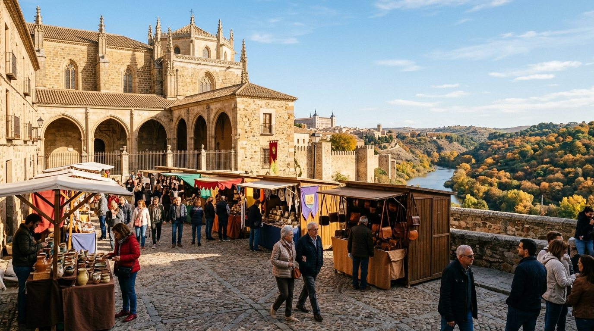

Toledo5 Planes este Fin de Semana en Toledo (2 al 4 de octubre de 2026): Mercados de Artesanía, Subterráneos Gratis y Ruta del Tajo
Si te preguntas qué plan hacer en Toledo este fin de semana (del 2 al 4 de octubre de 2026): ruta por el patrimonio subterráneo gratuito, mercado de artesanía en la Judería, senda del Tajo con colores de otoño y los cobertizos al anochecer.